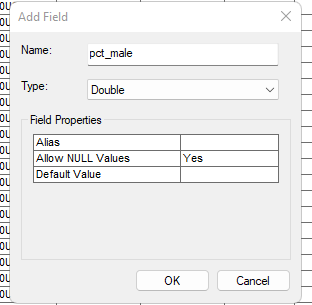

Preamble
In this fourth technical lab, we will complete any remaining steps of Monday’s demonstration lab then turn to steps necessary for the fourth assignment. These lab steps should be used extensively to aid with the completion of the fourth assignment due Sunday evening at 11:59pm.
Data
The US Census product that will be utilized in both the lab and assignment is the 2020 5 year summary in Geodatabase Format:
LINK to US Census TIGER Geodatabase
The data for this lab comes from the Class 4 Assignment.
We will be utilzing the .gdb option for the 2016-2022 American Community Survey US Census product.
The geographic unit will be US Counties for the lab steps. As discussed in the assignment, you may decide to choose another geographic unit such as Census Tract or Census Block Groups.
Backup Direct link to lab US Counties
Once the download is complete, place the .zip into a directory you make entitled c4lab4. Make sure to fully unzip the data folder.
Connect a new .mxd via ArcCatalog to the new c4lab4 directory and save that new .mxd as c4lab.mxd.
.gdbStep 1
Make sure to connect the
c4lab.mxdto the Class 4 Starter Data as downloaded and uncompressed.For demonstration purposes, the assignment guide and the technical lab will utilize US Census Counties as the geographic unit of analysis.
Step 2
- Next, import the geometry + tabular data as follows:
Step 4
- Next, join the tabular to the geometry and export the successful join to the
Default.gdb:
X01_AGE_AND_SexStep 4
- Once joined, transform the Data Frame to
NAD 1983 (2011) Contiguous USA Alberscoordinate system:
Step 5
- Next we will review the
X01_AGE_AND_Sextabular data. Notice the field naming convention - how the US Census designates both variable name and concept (theme):
B01001e1 = Total Population for the Sex Male/Female ConceptFor the assignment, you will need to research your variable themes and positions within the datatables. To do this, refer to the following:
Step 6
Typically, US Census data is mapped through a normalization process where the total population stands as the denominator, and the theme subset population is the nominator. For demonstration purposes, we will determine the Percentage of Males per US Counties. The formula for this determination is as follows:
\[ (B01001e2/B01001e1)*100 \]
(B01001e2/B01001e1)*100
Step 7
Next, we will utilize the Delete Field tool to remove all columns that will not be part of our mapping. This step should be done slowly and with deliberation to ensure that only unneeded concept variables are removed.
Step 8
Next, we will create a new Double column titled pct_male:

Next, we will populate the pct_male column with the normalization formula as follows:
[B01001e2]/ [B01001e1]*100
Next, we will use the Geospatial Analyst extension to review the histogram of the pct_male variable:
pct_male variableStep 9
In the final step, we will classify the pct_male variable via Equal Interval, Quantile, Natural Breaks and Standard Deviation. We will then conclude with Manual techniques. The following images show each of these classification methods for the pct_male variable using 5 Standard Classes:
With the Quantile Classification the total feature count is divided by the number of classes, five in our case. This results in the count of features per class from the lowest value to the highest value.
\[ 3221/5 = 644.2 \]
With the Equal Interval Classification the range of values of the variable are separated into equal range classes. For our variable pct_male the low value is 41.986 and the high value is 70.94.
\[ 70.94 - 41.986 = 28.954 \]
\[ 28.954/5 = 5.7908 \]
pct_male variableWith the Natural Breaks Classification an algorithm is applied to the variable, creating separate classes that minimize the average deviation from the class mean while maximizing the deviation from the means of the other groups. In other words, the variable range is separated into the most natural classes.
If you want to know how Natural Breaks works, this is a good summary:
The method requires an iterative process. That is, calculations must be repeated using different breaks in the dataset to determine which set of breaks has the smallest in-class variance. The process is started by dividing the ordered data into groups. Initial group divisions can be arbitrary. There are four steps that must be repeated:
- Calculate the sum of squared deviations between classes (SDBC).
- Calculate the sum of squared deviations from the array mean (SDAM).
- Subtract the SDBC from the SDAM (SDAM-SDBC). This equals the sum of the squared deviations from the class means.
- After inspecting each of the SDBC, a decision is made to move one unit from the class with the largest SDBC toward the - class with the lowest SDBC.
pct_male variableThe Standard Deviation Classification is used to determine each polygon value variation from the mean value of the variable range. By emphasizing values above and below the mean, standard deviation classification helps show which polygons are above or below an average value. Use this classification method when it is important to know how values relate to the mean. For greater detail in your map, you can change the class size from 1 standard deviation to 0.5 standard deviation.
pct_male variableThe Manual Breaks Classification option is used if you want to define your own classes. Alternatively, you can start with one of the standard classifications and make adjustments as needed. As an example of Manual Breaks, you might want just two classes; one above a certain value, and one below the certain value for a boolean result.
pct_male variableConcluding Remarks
In this tutorial lab for the US Census Data, we covered all the steps needed to access and then map via various classification methods typical census variables. For the Class 4 Assignment, you will explore the various census variables available in the American Community Survey product, and choose both a geography unit and a variable theme in order to create your choropleth deliverable.